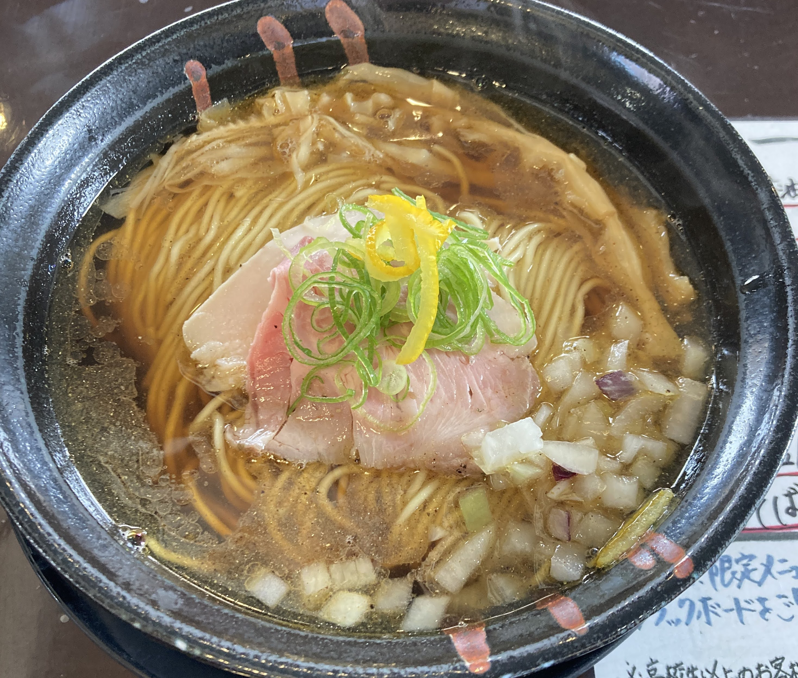

WELCOME TO TRAILRAMEN
"Near Tokyo, Are there any destinations where you can go trekking in a relaxed way? if possible, I'd like to try some Ramen." Here We Are! We are freelance trekking guide in north of Tokyo. In our tour, you can spend laid back time, we'll bring you to local safety trail and local tasty ramen.
About
Freelance Trekking Guide Couple Nob:Female, toughy, laughy, goofy. Shu:Male, tall, bald, backache.
Tour
Mt.Tsukuba and near area
Guided·1day Mt.tsukuba is one of the 100 famous Japanese mountains. The mountains of Tsukuba are sacred objects. Small-group guided tour explore the longest route from foot to the top of Mt.tsukuba.
- more info -Unryu Valley (Season Limited)

Guided·1day Only the end of January to top of February, we can see the huge iced fall "Unryu-Keikoku". Unryu Valley is a part of Nikko National Park (World heritage). If you have average strength, we can bring you to see this ice fall.
- more info -Ramen
The end of each tour, we'll bring you to local tasty Ramen restaurant. In Japan, there are so many Ramen taste same as mountains are.
- more info -